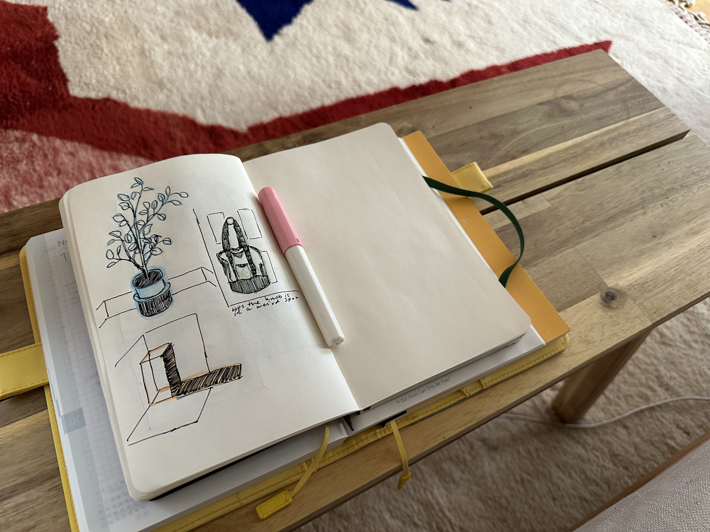

I’m going to copy Anh — I’ve been thinking about weeknotes lately, and about why I don’t write here very often, and about how I could change that. It’s easier not to write than to write, and writing in public is a little humiliating in a way that private journaling escapes. But I’ve managed to build up the habit of journaling, so maybe I can do this, too.
I go back and forth on this: I sometimes feel annoying and useless taking up space “on-line,” like I’m whining and begging everyone to look at me! I’m here! — like the only way I’m allowed to post is to share something interesting I worked on, and the rest of me has to live in the shadows.
But I know that’s not true. I know that I like to fill my feeds with tiny life updates and silly thoughts from people I follow, even people that I barely know at all. I love when I have no idea what anyone is talking about. I love browsing ooh.directory for blogs I never would have known existed, and filling my rss feed with inconsequential posts that nonetheless make me happy to read. I want more of that, so maybe I have to be part of making more of that.
what i’ve been up to
I’ve been sketching more — in an actual sketchbook, with actual pens and pencils. I like doodling in Procreate, but something about sketching on paper feels better. Even though it’s harder to correct things I’m not happy with, and even though I have far less freedom & flexibility with materials, I like what I make in my sketchbook far more than anything I make on my iPad.

Because of that, and because we’re nearing the end of the year, I’ve been thinking a lot about notebooks and planners. I still haven’t decided if I want a new Hobonichi for next year or if I want to try something else. I really don’t need a planner, much less a daily one, but I still like having them. I do have some idea of what my ideal notebook would be, and the modularity of the Traveler’s Notebook comes pretty close — so I might try that out.
watching
After years of curiosity, I started watching Outlander on Halloween — which was kind of perfect, because the first episode takes place on Samhain. I immediately loved the vibes. I’ve watched about half of the first season, and I’ll probably continue watching it for a bit, but I don’t know if i’ll be able to hang on for seven seasons.
I also saw The Killer, which I didn’t think was very good. It definitely looked & felt & sounded like a Fincher movie, but the story was lacking compared to everything else he’s done. I would rather just rewatch The Social Network for the 300th time.
playing
Genshin’s 4.2 patch just came out, and I stayed up embarrassingly late to play the entire Archon Quest in one night after pulling for Furina and her weapon. I’ve really loved the whole Fontaine arc, and I think Act V wrapped it up so well — Furina is easily my favorite archon.

And to brag for a second: I managed to get 100% exploration on the existing Fontaine map before 4.2 was released, I got the Fontaine wings, and I also finally hit 1000 achievements this week. I have really played a stupid amount of this game.
As for the other Hoyoverse games, I finished the latest Trailblaze Mission in Honkai: Star Rail last night, just a few days away from a new update. And I finally started Honkai Impact: 3rd this week — so far, I have no idea what I’m doing, but the story is really interesting to me. I wanna know the lore!!!
reading
I just reread Sophocles’ Ajax, a play I never expected to love as much as I do. I feel like every time I read it, I get something new out of it.
Skamander river
hostile to the Greeks,
there is one man your water
will not mirror
again(Ajax, Sophocles)
An issue of Spencer Chang’s newsletter from all the way back in February made its way into my queue recently, and I really loved reading it. Makes me want to be a more curious, friendly, open person.
I want to believe in people. I want to believe that I still believe in people.
(believing in believing in people, Spencer Chang)
I’ve also been thinking + reading a lot about chess lore recently:
- chess in literature
- chess, unlike war, is a game of perfect information
- the development of the chess motif in victorian fiction
- the symbolism of chess
- scash d’armor
That’s all. Happy Friday. Going to go make another cup of tea and clean my apartment.